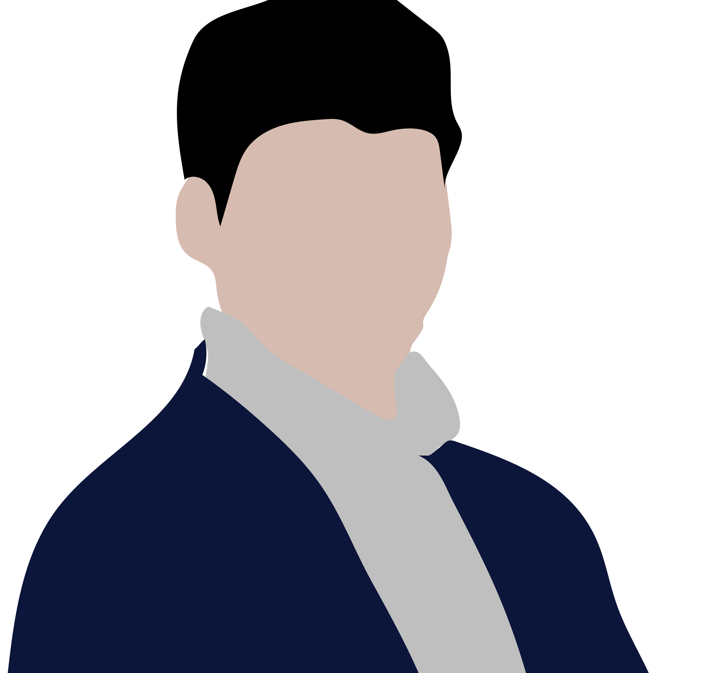
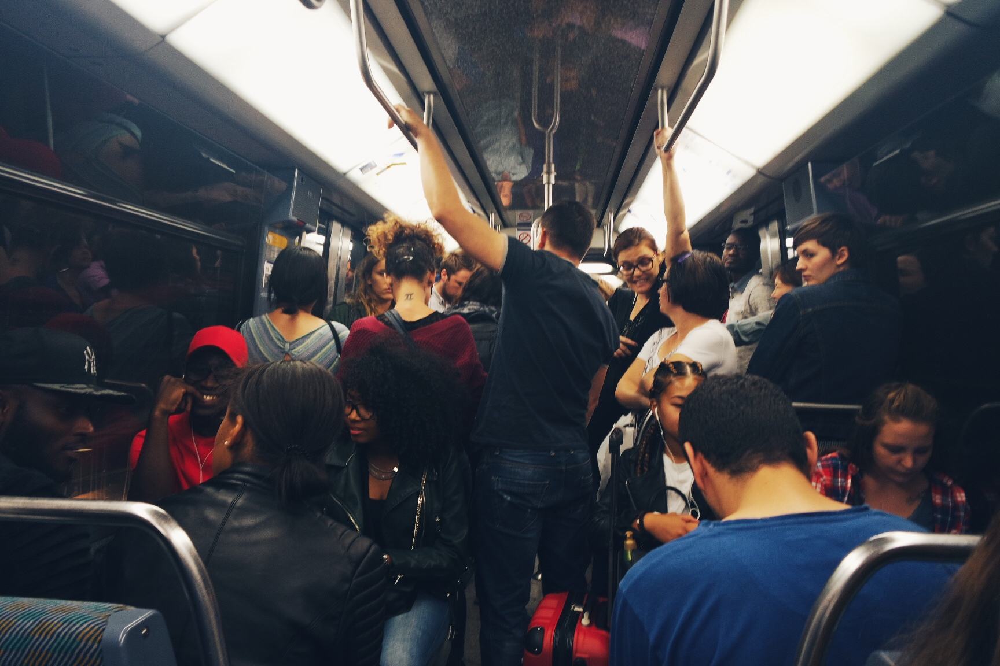

Youtube
#HanRiver
#2ndSubway
#Subway
#직장인 출퇴근 Vlog : 2호선 한강 지하철 뷰 - 여의도 | 국회의사당 | 더현대
1M views 1 month ago
1K
0
Share
Save
Report

직장인 Vlog
1M subscribers
subscribe
Up Next

파리 지하철 체험하기 | 퇴사 후 유럽여행 2편
직장인 vlog
103K views
주일 예배 실황, 코로나 시국 예배
직장인 vlog
20K views
파리 루브르 박물관, 바게트빵 | 퇴사 후 유럽여행 3편
직장인 vlog
433K views
 주일 예배 실황, 코로나 시국 예배 직장인 vlog 20K views
주일 예배 실황, 코로나 시국 예배 직장인 vlog 20K views 파리 루브르 박물관, 바게트빵 | 퇴사 후 유럽여행 3편 직장인 vlog 433K views
파리 루브르 박물관, 바게트빵 | 퇴사 후 유럽여행 3편 직장인 vlog 433K views